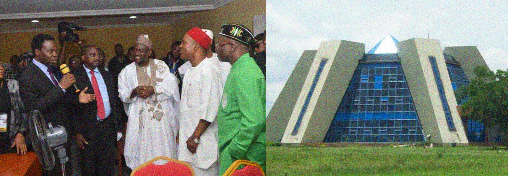

NASRDA commissions new institute, space incubation centre amongst other
projects
Nigeria’s National Agency for Space Research and Development (NASRDA) commissioned
and unveiled six state-of-the-art projects completed by the agency at its headquarters in Abuja today.
Currently located in Abuja, the Institute of Space Science & Engineering (ISSE)
was established on June 2, 2015, in accordance with the National Space Research & Development Agency (NASRDA)
Act 2010. It is a unique postgraduate Institute set to address the growing needs of space scientific knowledge
and innovations in Nigeria and Africa continent at large.
The Institute comprises of the Department of Space Science and Department of Aerospace Engineering Systems,
with programmes drawn from the specialized studies in Space Sciences, Engineering, Mathematics, Computerization,
and Technology Innovations leading to the award of Master of Science (MSc.) and Doctor of Philosophy (PhD) degree.
The programmes were strategically developed in response to the challenges faced by today’s scientific community
that requires the ability to analyze and solve complex scientific and engineering design problems in space science
and engineering. The institute involves interdisciplinary skills, expertise and approaches for proffering
solutions to a better understanding of Earth-Sun systems and space technology for the purpose of improving
socio-economic development and security.
The programmes provide students with training and skills in analysis, designs and monitoring of space systems.
Human centred design and development studies are incorporated into every facet of learning at the Institute to
emphasize the role of space science and technology in achieving the sustainable development goals in Africa.

Nigeria’s space programme recorded some success stories within its first decade of operation, having
launched five satellites into orbit between 2003 to 2011. Three out of these five satellites (NigeriaSat-2,
NigeriaSat-X and NigComSAT-1R) are still functional, reporting data from the outer space. NASRDA also boasts of
training over 300 staff up to Bsc and about 50 with PhD in space science and technology related field in a press
statement in 2016. There has been a significant collaboration between NASRDA and other government agencies in
charge of security, communication technology, education and environment.
However, some experts suggest that a successful space sector will be dependent on a thriving space ecosystem
comprising of newspace companies and government institutions. It appears NASRDA is set to grow a blooming
space ecosystem in Nigeria by establishing the Space Incubation Centre and Institute of Space Science and
Engineering (ISS&E).